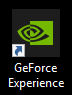
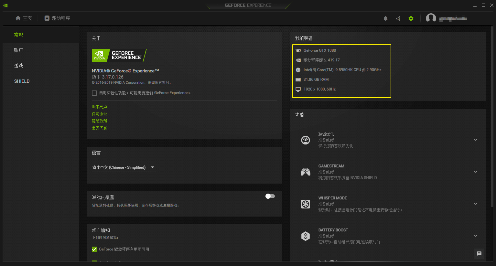
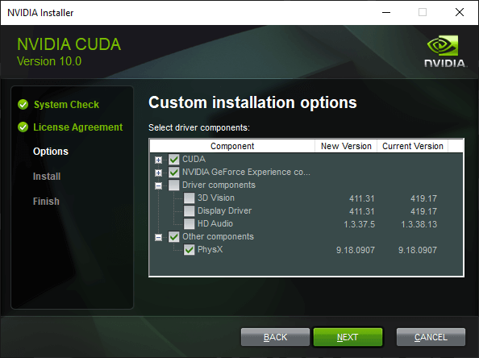
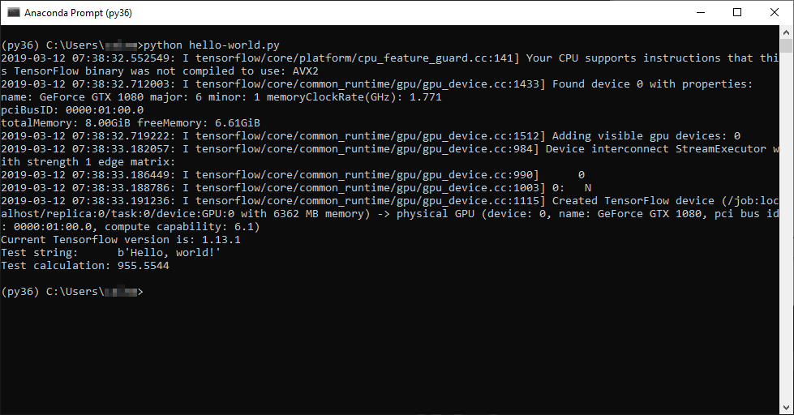

Hello world!¶
摘要
本节包含一个简易的安装指导，主要提供给Windows上的GPU用户。之后，用户可以按照本节指导编写第一个测试程序。
安装Tensorflow¶
本节针对Windows使用GPU的用户，提供一个安装最新版Tensorflow的方法。大致的步骤符合以下两个教程：
但是，需要指出的是，官方教程里有些部分已经不符合当前用户的实际情况，笔者经过摸索，总结以下的安装过程。
总体而言，安装Tensorflow需要用户确保以下条件
- NVIDIA驱动已经达到411.31及以上
- CUDA 10.0 (10.1不确定能否正常使用)
- CUDNN已经达到7.3.1及以上
- CUPTI版本与CUDA相配（不需要专门安装，在安装CUDA的同时已经自动集成）
除此之外，涉及多GPU支持的库(NCCL和TensorRT)，这里不考虑。因此，我们主要需要确保前三条正常安装。
提示
Tensorflow官方提供的安装包是基于CUDA 9.0，CUDNN >= 7.2的基础上编译的。然而现在NVIDIA已经不再提供CUDA 9.0了。Windows用户可以安装的版本包括过时的8.1和最新的10.1。在这种情况下，官方还提供一个令用户自行从源码编译Tensorflow库的方案，但是对于Windows用户而言过于繁琐，容易出错，这里不建议按照官方教程。
更新NVIDIA驱动¶
首先，我们可以开始更新我们的NVIDIA驱动。任何载有NVIDIA-GPU显卡的电脑，都应当在系统里已经预装好了GeForce Experience。点击如下图标开启GeForce Experience（如果是低版本的GeForce Experience，图标可能会不同），

如左图，在主界面上，可以观察到，当驱动版本不够高时，会自动出现更新提示，依照提示更新即可。建议在更新驱动时，关闭其他所有程序，以免造成干扰。
| 更新NVIDIA driver | 检查更新结果 |
|---|---|
 |
 |
如果更新完成，如右图，可以在设置界面检查到当前的版本已经达到最新。在安装过程中，由于驱动更新，屏幕可能会闪烁数次。在看到更新提示完成后建议重启。
安装CUDA¶
驱动更新并重启后，需要安装最新版的Visual Studio(VS)，这是因为CUDA库本身对VS具有一定的支持，如果先安装CUDA，则这部分支持无法安装到位。这对我们使用Tensorflow并不造成妨害，但是对CUDA的用户并不是一个推荐的做法，所以无论如何，建议在第一步，安装VS，下面提供VS社区版（免费）的链接：
接下来，可以开始安装CUDA。进入CUDA安装包的下载链接
提示
须知，并非最新版就是最适合的版本。实际能使用的CUDA版本取决于后续步骤中预编译包的支持版本。就笔者写到这里时，最新的CUDA 10.1已然不匹配最新版预编译包支持的CUDA 10.0，由于版本差距很小，不确定是否会由此引发问题，但读者可以自行尝试。
现在的安装包已经支持在线安装包和离线安装包两种模式，读者可以根据自己的实际情况选择对应的版本。注意，安装CUDA的时候，CUDA可能要求我们翻新驱动版本，但通过GeForce Experience安装的驱动一般应已达到最新，新于CUDA内部提供的驱动。因此，我们需要选择定制安装模式，根据我们需要对比版本号，将驱动更新的选项取消，如下图所示

安装CUDA后，建议重启。
安装CUDNN¶
安装CUDA的同时，已经自带安装上了CUPTI。但是CUDNN并没有包含在CUDA中，因此，我们需要到以下链接下载CUDNN并查看安装说明
不同的是，CUDNN没有安装包，是以压缩包的形式下载到本地。解压后，其中应当包含如下目录及文件
. └─ cuda/ ├─ bin/ # Binary library │ └─ cudnn64_7.dll ├─ include/ # C++ Include file │ └─ cudnn.h ├─ lib/ # C++ Lib file │ └─ x64/ │ └─ cudnn.lib └─ NVIDIA_SLA_cuDNN_Support.txt # Readme file
假设我们CUDA的安装目录在C:/Program Files/NVIDIA GPU Computing Toolkit/CUDA/v10.0，将上述解压的bin, include和lib三个文件夹，直接拷贝覆盖到该安装目录下，即可完成CUDNN的安装。
进行完上述步骤后，我们还需要确保几个环境变量正确设置：
- 存在
CUDA_PATH=C:/Program Files/NVIDIA GPU Computing Toolkit/CUDA/v10.0，是我们的安装目录。理论上在CUDA安装后，该目录已经自动设置好。 - 环境变量
PATH中，存在C:/Program Files/NVIDIA GPU Computing Toolkit/CUDA/v10.0/bin,C:/Program Files/NVIDIA GPU Computing Toolkit/CUDA/v10.0/extras/CUPTI/libx64两个路径，由于CUDNN已经配置在CUDA安装目录下，我们不需要像官方文档那样，添加第三个CUDNN的安装路径。
安装Anaconda¶
Windows用户建议使用Anaconda管理python环境。作为一个开源的项目，Anaconda发行版已经集成了我们所需要的大多数python包，其中有些包是我们自己难以安装上的，例如支持python3的PIL。我们选用python3版的Anaconda，下载路径如下：
注意选择x64版的安装包。安装结束后，我们已经有python3.7的环境了。鉴于有些情况下我们可能需要使用更早的python版本，接下来我们可以安装python3.6的虚环境。
Anaconda可以安装在用户或系统目录下。注意，如果安装在系统目录下，如果不在虚环境下，安装任何包都需要管理员模式。不过这不影响本教程的示例，因为我们将安装虚环境。直接打开Anaconda Prompt，并键入以下命令：
conda create -n py36 python=3.6 anaconda
按照引导流程安装，经过一段时间后，我们将得到python3.6版的Anaconda。以后我们可以直接从开始菜单Anaconda Prompt (py36)进入该虚环境，也可以在基环境中键入
activate py36
转换到虚环境中。
安装预编译好的Tensorflow¶
我们可以查看如下项目：
fo40225/tensorflow-windows-wheel
该项目的维护者在不断根据Tensorflow的更新，预编译出适合不同版本的Tensorflow安装包。截至笔者写到这里为止，最新支持到r1.12版。我们选择对应的GPU版Tensorflow，并在虚环境下执行以下命令：
pip install https://github.com/fo40225/tensorflow-windows-wheel/blob/master/1.12.0/py36/GPU/cuda100cudnn73sse2/tensorflow_gpu-1.12.0-cp36-cp36m-win_amd64.whl
等待一段时间后，安装将会结束。
Hello world! 测试¶
撰写如下代码，保存到hello-world.py文件，
if __name__ == '__main__': import tensorflow as tf test_str = tf.constant('Hello, world!') test_cal = tf.reduce_sum(tf.random_normal([1000, 1000])) with tf.Session() as sess: print('Current Tensorflow version is:', tf.__version__) print('Test string: ', sess.run(test_str)) print('Test calculation:', sess.run(test_cal))
在保存目录下，执行
python hello-world.py
第一次运行可能需要等待较长的初始化时间（硬件配置）。如果能正常运行，我们将看到如下结果：

其中，显示结果之前的记录信息反映了GPU已经可以正常工作。而“Test calculation”显示的结果是10^6个服从\mathcal{N}(0,1)分布的随机数之和。根据相互独立的随机正态分布互不相关的特性，我们可以推算出，该结果服从\mathcal{N}(0,10^3)的正态分布。